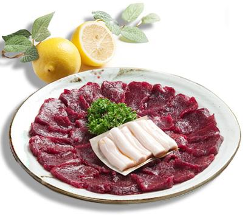

|  |
| 번호 | 29 |
|---|---|
| 분류 | 음식 |
| 장소 번호 | F0029 |
| 장소명 | 뭉티기 |
| 장소 주요 설명 | 1950년대 후반 처지개살 (사태살의 일종으로 소 뒷다리 안쪽의 허벅지살)을 뭉텅뭉텅 썰어 참기름, 마늘, 굵게 빻은 고춧가루 등을 섞은 양념에 푹 담궈 먹는 조리법의 생고기는 대구가 유일하다. 싱싱하지 않으면 판매를 하지 않기 때문에 싱싱한 한우의 참맛을 그대로 느낄 수 있다. 전국적으로는 육회가 보편적인 술안주로 인기를 끌고 있지만 한우 생고기인 뭉티기는 대구가 원조이다. '뭉티기'란 '엄지손가락 한마디 크기만하게 뭉텅뭉텅 썰어 낸다'고 뭉티기라고 불렀다. 고기에 양 념을 전혀 하지 않아도 자체 풍미가 있어 싱겁지가 않다. 양념장은 감칠맛을 더하고 육질의 쫀득함과 부드러움의 복합적인 맛을 낸다. 뭉티기는 대구사람들의 기쁨·고통·한숨이 서려 있는, 대구사람들에 의해 피워낸 붉은 장미꽃 같은 음식으로 외지서 친한 친구라도 찾아오면 반드시 찾아가는 코스이기도 하다. 인절미보다 더 차지기 때문에 담긴 채로 접시를 뒤집어도 흘러내리지 않는다. |
| 장소 상세 설명 | 생고기의 씹는 맛! 싱싱한 생고기의 부드러운 씹힘과 양념의 고소하면서 매콤한 맛 |